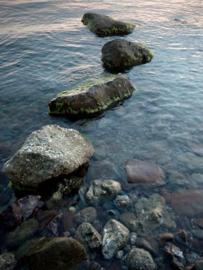

ПОЭМЫ
ХУДОЖНИК
Маленькая поэма со
странностями
В.
Друг мой
купил квартиру в доме кооператива;
это была хорошая трехкомнатная квартира,
и лишь единственным свойством хозяину не угодила:
всеми своими окнами на кладбище выходила.
Не́ был друг
суеверным, а всё-таки почему-то
из-за пейзажей кладбищенских в душу вползала смута,
и он говорил порою в дом приходившим людям:
– Это как
тренировка – ведь все там когда-то будем…
Друг мой был
живописец и в стиле работал странном:
писал фигуры без лиц, пейзажи за плотным туманом,
натюрморты, где были шары, кубы и древние маски, –
и всё это в сотнях оттенков одной-единственной краски.
Он объяснял,
фиксируя вниманье на этом моменте:
– Это как тихая музыка и на одном инструменте;
гармонизировать лад с точностью нужно аптечной,
зато красота мелодии может быть бесконечной.
Все
удивлялись ему, а мне он признался однажды,
что чувство его гнетёт неутолённой жажды,
особенно после того, как с ним приключился случай,
который нельзя объяснить, сколько себя ни мучай.
Я был у него
в гостях, и он рассказал подробно
о событии в доме, что было чуду подобно;
можно в него не верить, а верить – то без сомнений,
ибо не может быть больше двух несовместных мнений.
– Однажды в
дверь позвонили. Мужчина, с виду приличный,
вежливо попросил о беседе сугубо личной.
«Можно
войти?» – «Входите». – «Сразу спешу объясниться:
десять лет назад вы лежали в больнице,
в реанимации». – «Было; припоминаю, но смутно:
долгая темнота, серое зимнее утро
и странный контур в дверях, в каком-то дрожащем свете…»
– «Так это я
и был – посланник, ваш ангел смерти!
Вы были в
коме, я знал, в больницу явившись ночью,
но очень
хотели жить – я видел это воочью.
Я был
прислан за вами, но есть у нас разрешенье
в особых случаях принимать собственное решенье».
– «А что же
нынче?» – «Нынче контроль: сзади десятилетье;
мы знать хотим, как вам жилось на возвращённом свете».
– «Жилось
мне быстро, время моё мчалось, как поезд скорый, –
всё время в памяти образ жил той темноты, за которой…
Вот и боюсь
– не успею исполнить предназначенье,
а тут заоконный пейзаж, словно бы в поученье…»
– «О нет, не
годится вам думать о смерти и тлене –
ведь то, что с вами случилось, зовётся у нас «обнуленье»!
И означает
это слегка жаргонное слово,
что в Книге Судеб страница написана будет снова,
и летоисчисление будет отныне длиться
не с вашего дня рожденья, а с этой ночи в больнице.
Значит,
спешить не надо – время не поджимает,
и ежели ваше призванье над бренностью поднимает,
доверьтесь ему спокойно, поверьте в его постоянство;
а кладбище по соседству – это всего лишь пространство,
где обитают люди после своей кончины,
и его опасаться нет никакой причины:
намного ли будет лучше соседство иного сорта –
например, стадиона или аэропорта?»
Гость
пожелал удачи и ушёл восвояси,
а я себя ощутил, как заново в первом классе.
Мир лежал
предо мной, ещё не понят, не познан,
и я подумал: понять – оно никогда не поздно.
Он посмотрел
в окно на плиты и обелиски:
– Когда начинаешь труд, не нужно думать о риске.
Если
серьёзен подход, если серьёзна задача,
наверное, равно важны удача и неудача.
Это как и в
любви – ничего не добьёшься силой…
Пойдём,
покажу портрет некоей женщины милой.
В холодный
дождливый день на самом исходе лета
её я уговорил позировать для портрета.
Я, помнишь,
сказал про риск? Я начал портрет, рискуя…
Ладно,
увидишь сам…
Мы
перешли в мастерскую.
Было тихо,
лишь паркет поскрипывал под ногами,
и холст на мольберте стоял в темно-коричневой гамме.
И был на
картине дождь в бликах коричневых мокрых,
и был на картине дом в тёмных полночных окнах,
и только одно окно жёлтым сияло светом,
словно бы изнутри было чем-то согретым.
Декабрь 2012
УЧИТЕЛЬ
МАТЕМАТИКИ
Маленькая поэма
Григорий
Абрамович Липшиц был математик от Бога.
Обычно был
неулыбчив, вёл занятия строго.
Любил задачи
с подвохом и, если решавший попался,
он, объясняя ошибку, коротко улыбался.
И так же он
улыбался, рассказывая по сути,
зачем на старости лет учится в пединституте:
«Я ведь
родился в Польше, во времена такие,
когда Крулевство Польске входило в состав России.
Семья была
состоятельной. Хотя детей было много,
всем дали образование. Меня привела дорога
на физмат в Петербург – так семья порешила, –
в еврейские
пять процентов, которые власть разрешила.
А тут пришла
революция, война, империя бита.
Было
Крулевство Польске – стала Речь Посполита.
Не получил
диплома, а кто же поверит слову?
Как только стало возможно, пришлось обучаться снова.
Снова
физмат, но в Кракове, теперь по собственной воле.
Чтоб на хлеб
заработать, пристроился к частной школе
и постепенно
привык: тетрадки, звонки, уроки,
сперва не вникая в события на западе и на востоке.
Но пришлось
разбираться – там вызревали беды:
на западе и на востоке правили людоеды.
И в тридцать
девятом осенью новое время настало –
вошли две армии в Польшу, и Польши снова не стало.
Я стал
украинским жителем, два года провёл во Львове.
Потом
накатила война, много огня и крови.
Сгорели мои
бумаги – спасти их и не пытался;
слава Богу, по счастью в кармане паспорт остался.
Я оказался
за Волгой, чужой, а всё же на воле.
В каком-то
селе захудалом привычно работал в школе,
где две судьбы горемычных соединились войною:
беженка из-под Киева стала моей женою.
В сорок
шестом году вернулись в её жилище.
Были не то
что бедны – были попросту нищи.
И там
оказалась школа, и всё уже так знакомо,
да только на птичьих правах – ведь я опять без диплома!
Писал по
всем адресам, надеясь на чудо, на милость,
но во всех ответах одно: архивы не сохранились.
Я пошёл по
начальству, кланялся, и в результате
в Киевском педагогическом заочно учусь на физмате!»
Он коротко
улыбался, когда касался истоков.
Мы сидели
вдвоём в учительской после уроков.
Я –
начинавший только, он – уже на излёте
и завершил разговор на тихой спокойной ноте:
«Начиная свой путь, мы от жизни не ждём подвоха
и лишь в конце понимаем, что хорошо, что плохо,
а чаще бывает так – и то, и другое сразу;
но я себе самому не изменил ни разу.
Мог ли я
стать учёным? Ответа не знаю, ей-богу.
Но трижды
судьба выводила на одну и ту же дорогу.
И если
сейчас в душе есть подобие лада,
то это моё назначенье, и другого не надо».
Январь 2013
ДВОЕ,
или СЮЖЕТ ИЗ
АЛЬТЕРНАТИВНОЙ ИСТОРИИ
Поэма
Жизнь провёл
человек на самой вершине славы,
его окружали сплошь гении, таланты и знаменитости,
и если в иных мемуарах его проявления слабы,
то надобно понимать, что это дело взаимности.
Он был
Героем труда и трижды лауреатом,
о нём писались книги, дипломы и диссертации,
на давних военных снимках был он молодцеватым,
в мифы и анекдоты вошли его ситуации.
А рядом жил
человек вовсе незнаменитый –
он ревностно чтил законы и выполнял указания;
местом его работы был институт закрытый,
где он рассчитывал схемы и снимал показания.
О нём не
снимали кино и не писали газеты,
люди его общения были тоже незнаменитыми,
и поскольку жизнь его проходила в секретах,
не возникло навыка на сцене стоять под софитами.
Лишь одно их
объединяло – что оба были евреи
и на себе ощущали тяжесть забот государственных:
одному –
задания выполнять как можно скорее,
другому – часто доказывать правильность жестов дарственных.
А в
пятьдесят втором вождь заболел, но не умер,
и, к рычагам вернувшись, план привёл в исполнение,
и в пятьдесят третьем, точно под праздник Пурим,
всех евреев страны погнали на поселение.
И всё прошло
без сучка, поскольку имелся опыт
чеченцев, калмыков, немцев, татар и прочих подавленных:
не то чтобы
крик протеста – не слышен был даже шёпот,
и не было
мародёрства в домах, поспешно оставленных.
Был тот
самый порядок, о коем всегда мечтали
в народе, который по праву именовался титульным,
а если случались проколы, то это были детали,
портившие настроение лишь слабонервным и мнительным.
Сколько
тысяч людей в дороге сложили кости,
сколько душ и умов было навек потеряно!
Можно было в
итоге говорить о втором холокосте,
да только в стране тогда не было этого термина.
Но как-то
всё утряслось, доехавшие осели,
оказалось, что можно жить и на сибирском севере;
люди ели, и пили, и создавали семьи:
полгода стоит зима, но есть и ночи весенние…
А заграница
молчала, не желая быть вовлечённой,
поэтому делала вид, что не имеет понятия.
И оба наших
героя – Герой труда и учёный –
сошлись на лесоповале как оставшиеся без занятия.
Объединенные
случаем – общей пилой двуручной, –
они постепенно сблизились, и вечерами барачными
соединили подходы художественный и научный,
чтоб сообща бороться с мыслями самыми мрачными.
А тиран в
пятьдесят восьмом всё-таки врезал дуба,
и Двадцатый съезд состоялся лишь в шестьдесят каком-то там,
и по домам
вернулись наши два лесоруба –
один с чемоданом фанерным, другой и вовсе с котомкою.
И оба в
короткое время заметили не без боли,
что встреченные на улицах смотрят на них завистливо,
что они по виду богаче, чем оставшиеся на воле,
а вокруг нищета такая, что и представить немыслимо!
Но всё-таки
надо признать: вернувшимся были рады,
о них говорили страницы газетные и книжные,
очередной генсек им раздавал награды,
очередной премьер на должности звал престижные.
Герою труда
вернули все его прежние лавры,
его опять узнавали и приветствовали многие,
и он согласился стать самым по сути главным
в определении новой государственной идеологии.
Второму с
самого верха тоже предложено было
возглавить отдел перспективы в наиглавнейшем «ящике»:
поскольку
поныне оружие – наша главная сила,
в этой науке нам нужны далеко смотрящие.
Но он
ответил просто: – Я отстал от науки,
зато хорошо и серьёзно вчитался в законы Всевышнего
и хочу
поэтому, чтобы дети мои и внуки
жили по этим законам, даже пусть и без лишнего.
И как только
в границе слегка приоткрылись двери,
он, окинув мысленно путь прожитый и пройденный,
осуществил мечту, с которою жил не веря, –
забрал свою семью и навеки расстался с родиной.
Прилично
освоил иврит, что было совсем непросто,
но стал писателем русским и, ступивши на поле минное,
написал
книгу под названием «Два холокоста»
и с ней получил признание, можно сказать, всемирное.
А идеолог
тоже больших успехов добился:
есть свободная пресса, выборы тоже свободные.
Но власть не
просила прощенья за каторги и убийства –
она, мол,
осуществляла лишь чаяния народные.
Семидесятые
годы были годами подъёма,
жить стало явно лучше, но только вот веселее ли?
И в новой
свободной прессе мотив зазвучал знакомый:
мы были б ещё богаче, когда бы не под евреями!
Между двумя
друзьями все годы шла переписка,
они обсуждали подробно и прошлое, и настоящее,
и тот, который в Хайфе, обо всём говорил без риска,
окончательно освободившись от призрака службы в «ящике».
А тот,
который в Москве, взвешивал каждое слово,
поскольку за ним наблюдали и левые, и правые,
и с обеих сторон звучал приговор сурово,
и с обеих сторон набрасывались оравою –
ибо не был
своим; а он не мог снести
положенье,
когда уже не оказывал на судьбы страны влияния,
и в последнем письме признал своё пораженье,
и вскорости умер от странного острого заболевания.
Ему оказали
почести, которых и в жизни хватало,
были печальные речи, было надгробное пение…
А через год примерно ночью пришли вандалы
и осквернили его последнее упокоение.
Май 2013
ДАЛЬНИЙ СВЕТ
Поэма
ПРОЛОГ
Жил
писатель, сочинял
повести с романами,
сочиненья начинял
странными обманами.
Прочитаешь –
прост сюжет,
проще не придумаешь,
а потом покоя нет:
всё об этом думаешь.
Прочитаешь –
прост язык,
нечего разгадывать,
лишь за каждым словом лик
вечности угадывать.
Прочитаешь –
прост мотив:
как живётся-можется;
но заставит, не спросив,
о душе тревожиться.
День
проходит, месяц, год –
неуютно совести,
из души мотив нейдёт
той печальной повести.
Год
проходит, три и пять,
главное – упрочится:
перечитывать опять
эти книги хочется.
Тридцать лет
и сорок лет –
как финал экзамена:
словно дальний-дальний свет
к нам приходит заново.
1950.
«СТУДЕНТЫ»
Первая книга
– и вот те на,
приметил батька усатый:
упала премия на пацана,
взлетай теперь в небеса ты!
Теперь
печатай за томом том,
полный парадной фальши,
но никогда не сможешь о том,
что спрятал от всех подальше.
Сгинул отец
в тридцать седьмом,
много других – тогда же…
Съёжился
весь тёмно-серый дом,
никто и не пикнул даже.
Добраться до
сути, найти бы след –
стало душевной жаждой.
Но как на
это посмотрит портрет,
висящий в комнате каждой?
Сколько же
надо прочесть бумаг,
сколько выслушать мнений,
чтоб разобраться, что враг – не враг
и что гений – не гений?!
Сколько вдов
и сколько сирот,
сколько сломанных судеб!
И что за
власть? И что за народ,
который терпит, не судит?
Копи́, хоть
это всё нелегко,
обдумай не раз, не дважды,
ибо пока ещё далеко
до утоления жажды.
1963.
«УТОЛЕНИЕ ЖАЖДЫ»
Канала только не
хватало,
Чтоб с Марса был бы виден он!..
А. Твардовский. «За
далью даль»
Вот
марсианин увидел Туркменский канал,
и марсианина этот канал доконал,
ибо считал марсианский седой астроном,
что на Земле невозможен подобный объём.
Если на
Марсе есть жизнь и учёные есть,
верный расчёт им заведомо не произвесть,
ибо на Марсе
не слышали наверняка
краткое слово и страшное слово «зэка».
Только к
чему бы нам груз марсианских забот?
Нам и
своих-то расхлёбывать невпроворот.
Умер тиран,
чуть уменьшился уровень зол;
вот и канал по иному маршруту пошёл.
Строить
канал – это собственный выбор судьбы?
Люди
свободны, а трудятся, словно рабы.
Вот
экскаватор – ступенька к такому труду:
сидя в кабине, себя ощущаешь в аду.
В этой
жарище слились и закат, и восход,
без рукавиц за рычаг не берись – обожжёт!
И пред тобой
не прекрасный и яростный мир,
а равнодушный и скучный солёный такыр.
Вот и
трудись, выбирай кубометры песка
и на застрявших в песке не смотри свысока
даже с ковшом, что, твоей повинуясь руке,
роет канал марсианский в горячем песке.
В горестных
душах, зарывшихся в толщу песка,
жажда свободы ещё не возникла пока.
Тем же, кого
угнетает обыденный плен,
воздух пустыни сулит полноценный обмен.
1969.
«ОБМЕН»
Давно ли
ушли от бараков и полуподвалов?
Давно ли
ушли от заевших житьё коммуналок?
А нынче уже
на троих и двухкомнатной мало –
в глазах сослуживцев неловок ты, если не жалок.
А кто-то из
близких, похоже, что сходит со сцены,
и площадь уйдёт, если тут же не подсуетиться,
и хочешь не хочешь, а в дело вступают обмены,
и сложные связи, и разные ушлые лица.
Конечно,
доплаты, и веянья модного быта,
и кто-то сегодня придёт на продуманный ужин…
Оставлен
Рахманинов, Рильке и Гессе забыты,
Феллини не нужен и Кант совершенно не нужен.
А нужно
сродниться с трехкомнатной областью рая
и к ней прикипеть, обменяться сосудами с нею,
и выставить локти, ничуть от стыда не сгорая,
и зубы оскалить, ничуть за оскал не краснея.
Здесь только
начать, оказаться в запасливом круге,
а дальше круги побегут на союзном просторе:
избу на Валдае сменять на жилище в Калуге,
Калугу с доплатой потом – на Балтийское море.
Когда в
обороте лесничества, горы и степи,
нетрудно менять, не впадая в семейную склоку:
Балтийское море потом – на учёную степень
и скромный гараж от трехкомнатной неподалёку.
И ты
возникаешь в семье и в глазах сослуживцев
не в паре пиджачной, а в венчике римском и в тоге,
и жизнь пред тобою ковровой дорожкой ложится,
и всё бы отлично… но что остаётся в итоге?
1970.
«ПРЕДВАРИТЕЛЬНЫЕ ИТОГИ»
Странная
хворь иногда посещает меня,
реже в ночи, а обычно средь белого дня –
словно бы обморок, но без потери сознанья:
люди, машины, животные и облака
вдруг застывают, хоть движутся наверняка, –
ни шевеленья не вижу я, ни содроганья.
Десять
секунд, и не более, длится напасть,
но и довольно – её непомерная власть
очень страшит, не шутя, как предчувствие смерти,
как посылаемый с неба умышленный знак,
что
остановится всё неожиданно так –
выпадет жизнь из обычной её круговерти.
Это в году
происходит раз пять или шесть,
нерегулярно, поэтому трудно учесть
обморок новый, особенно если в дороге.
Я принимал
его как неизбежное зло,
но в эпизоде недавнем меня обожгло:
а не пора ли подбить и обдумать итоги?
Ежели
завтрашний день не зажжётся во мгле,
что по себе я оставлю на этой земле?
Что, если
нынче – последнее предупрежденье?
Ты полагал,
что полжизни ещё впереди, –
что, если нет? Не проси и уступок не жди,
ибо зачем же стоп-кадры – твоё наважденье?
И прихожу я
поэтому к мысли простой:
школа серьёзности – каждый мой день прожитой;
вот и учусь, не давая пустых обещаний.
Что-то
получится, что-то, конечно, и нет,
но на пути, где останется всё-таки след,
много случится тяжёлых и долгих прощаний.
1971.
«ДОЛГОЕ ПРОЩАНИЕ»
Мы прощаемся
после шестнадцати лет.
Мы прощаемся
сухо и в лица не смотрим.
Мы исчезнем
из глаз и для слуха мы смолкнем.
Вот смотри –
я купил в Каракумы билет.
Мы прощаемся
после шестнадцати зим.
С каждым
годом они были всё холоднее.
Эту зиму
прожить – а какая за нею?
Этот год
пережить – и какой же за ним?
Мы прощаемся
после раздельных дорог,
и раздельных столов, и раздельных ночлегов.
Было много
сначала совместных забегов,
но на финише каждый из нас одинок.
Мы прощаемся
после шестнадцати книг,
что тобою написаны в заданной теме.
Я их не
прочитал в отведённое время –
я ведь так и не выучил этот язык!
Мы прощаемся
после шестнадцати строк,
напечатанных мною в случайной газете.
Не пытался
пробраться в сообщества эти –
как всегда, я надеюсь на случай и срок.
Мы прощаемся
после шестнадцати драм,
хладнокровных измен и отчаянья тоже.
Обретается
опыт, и, годы итожа,
за него я действительно много отдам.
Сам себе
говорю: устои́, продержись –
не впервой каракумское лето выносим…
И начнётся
московская тихая осень.
И начнётся
другая – и верная – жизнь.
1975.
«ДРУГАЯ ЖИЗНЬ»
В пальцах
полупустая сума́,
но душа моя полнится тайною:
всё же кончилась эта зима,
вот и я потихоньку оттаиваю.
Из пустыни,
где долго я жил,
возвратившись в места горемычные,
я участок земли застолбил,
чтобы выстроить лежбище личное.
И оттаял
участок земной –
и душа моя полнится силою,
потому что в соседстве со мной
будет строиться женщина милая.
Как-то вдруг
я подумал о том,
что, возможно, здесь Божье наитие,
чтобы общий мы строили дом –
нашим душам от мира укрытие.
Дом стоит –
невелик, но пригож,
пониманьем заполнен и нежностью,
на другие дома не похож
ни убранством жилища, ни внешностью.
Сорок лет
проведя на свету
под чужими дотошными взглядами,
я впервые ступил за черту,
где друг другу всегда были рады мы.
А что быт
небогат – благодать,
ибо веруем, хоть и не набожны.
В самом
деле, ну что нам терять?
Ведь
живём-то не в Доме на набережной!
1976. «ДОМ
НА НАБЕРЕЖНОЙ»
Дом как дом
– не велик, не мал,
а жильцов-то каких поймал,
знаменитых и премиальных!
Вырос меньше
века назад,
а сегодня его фасад
плотно в досках мемориальных.
Дом как дом
– не мал, не велик –
был построен как дом владык,
что живут, ничем не владея.
Но в итоге
своей судьбы
оказались они рабы –
не вождя, так высшей идеи.
Дом стоял и
менял жильцов,
превратившись в конце концов
в мрачноватый символ системы.
Мы не жили в
символе том –
но страна как единый дом! –
уж в стране проживали все мы.
Оставался
выбор один:
в тишине дожить до седин,
согласившись на роль статиста,
или… Поиздевавшись всласть,
это поле умела власть,
это «или» выкосить чисто.
Вот и рухнул
огромный дом;
никого не осталось в нём,
хоть иные были неплохи.
И стоит над
рекой старик –
серый дом, не мал, не велик, –
символ сгинувшей той эпохи.
1978.
«СТАРИК»
Читаю дивные
строки древнего мудреца;
любя их, перелагаю от своего лица.
Лучше
сказать не сумею, хуже – зачем оно,
если не прорастает мудрых мыслей зерно?
«…ещё
довелось мне увидеть – я повторю для всех, –
что не быстрым удача в беге и не храбрым в битве успех,
и не мудрым хлеб, и богатство – не запасающим впрок,
но каждому срок и случай, только случай и срок».
Заповедь эту
оставил, нам в назидание дал
тот, кто прожил немало и многое повидал, –
древний мудрец еврейский – Коэлет-Экклезиаст,
острый, парадоксальный, уж точно, что не схоласт.
Вот
привилегия возраста, памяти и ума –
знать о связи явлений, что она не пряма,
не подчиняется логике и нашим о ней мечтам:
она управляется с неба, а как – неизвестно нам.
Что же нам
остаётся – покорно плыть по реке,
события не направляя ни близко, ни вдалеке?
А что́
характер и воля, а что́ желанья мои,
и не только собственные, а, скажем, моей семьи?
Нет причин
без последствий и следствий нет без причин,
но только надобно помнить: на свете ты не один,
и то, что сейчас ты делаешь, откликнется на веку –
аукнется молодому, откликнется старику.
Пока твои
уши слышат и глаза не закрыла мгла,
в небо смотри и вслушивайся, верша земные дела,
а для твоих успехов, хоть приговор и жесток,
только время и место, только случай и срок.
1981. «ВРЕМЯ
И МЕСТО»
На этой
главе поэма свой усмиряет бег,
ввиду неподъёмности темы белые флаги выкинув:
место – Советский Союз, время – двадцатый век,
единственный персонаж – известный писатель Трифонов.
Многими
очень любим. Многим только знаком.
Какой-то уж
очень простой рядом с мэтрами нашими.
Место –
шестая суши. Время – век целиком.
И миллионы
могли быть его персонажами.
Как говорил
поэт, ищем речи нагой;
но если нагая речь, как избежать монотонности?
Он болевые
точки знал, как никто другой, –
слегка на них нажимал, и это держало в тонусе.
Довольно
простой язык. Довольно простой сюжет.
Но за́ душу
чем-то берёт даже страница журнальная.
Посмотришь
ночью в окно – дальний неяркий свет,
словно отблеск костра или свеча поминальная.
Но главный
посыл не в том: с какой стороны ни смотри,
лишнего жеста нет, как нет и нажима лишнего.
Небо над
головой и главный закон внутри –
не называя вслух, он призывал Всевышнего.
Стоял слегка
в стороне. В открытую драку не лез.
Рад был
нашим удачам. Горевал, когда было горестно.
Умел
подобрать слова на вкус, на запах, на вес
и правду сказать в глаза, не повышая голоса.
Как-то легко
входил в самый закрытый дом
и выходил затем, жильцов из рутины вытряхнув.
Место – в
наших сердцах. Время – пока живём.
Тревожная
совесть людей – негромкий писатель Трифонов.
Октябрь 2012